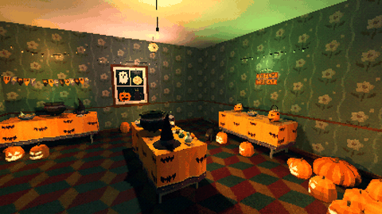

Tutorials › Make a Curse Spread Through a Room
How to Make a Curse Spread Through a Room in Godot 4
Every prop with a cursed or creepy state turns, one at a time, nearest to where it starts first.

A curse that spreads is scarier than a room that switches at once. The script finds every prop under a room that can still turn (placed as its first state, shown, within a radius if you set one), sorts them by their distance to where the curse starts and swaps each in place for its other state, a fraction of a second apart, with the pack's cordatix_sides.gd: same place, parent, name and groups. A signal for each prop is the place for a sound or a flicker of the lights.
Script: curse_spread.gd (MIT) · Godot 4.3 or newer · its folder on GitHub
How to use it
- Add a
Nodeto your level and attachcurse_spread.gd. - Set
room(any node the props are under),source(aMarker3Dwhere the curse starts) andpack: the pack's folder with its trailing slash. - Tune
step(seconds between two props) andradius(0: every prop under the room). - Call
spread()when the moment comes: an Area3D the player walks into, an item picked up, a door opened. Connectturnedandfinished.
What it needs
- Godot 4.3 or newer.
- A Cordatix PSX Horror pack that has a switch: its props placed as their own scenes, its
data/props.jsonand the series'cordatix_sides.gd.
Try it free
The Cordatix PSX Horror Free Sampler's Halloween decorations (carved pumpkin, string lights, banner, ghost sheet) have their festive and creepy states: set pack to res://cordatix/haunted_psx_halloween_takeover/ and the code works on them as they are. The full pack's are in res://cordatix/haunted_psx_props/.
How it was tested
In Godot 4.3 and 4.7.2, with the free sampler's decorations: four props at known distances turn, nearest first, each once, into its pair at its place; a hidden one and one already turned stay as they were; finished comes once and nothing is left to turn; with a radius only the props within it turn.
The code
extends Node
## How to Make a Curse Spread Through a Room in Godot 4
## Cordatix Godot 4 PSX tutorials, MIT licensed: https://github.com/GoldenSparrow-Dev/cordatix-godot-psx-tutorials
## The devlog: https://cordatix.itch.io/haunted-psx-props/devlog/1765998/how-to-make-a-curse-spread-through-a-room-in-godot-4-cordatix-psx-horror-props
## Spreads a curse through a room: every prop under `room` that has a cursed (or creepy) state turns, one at a time,
## the nearest to `source` first. Works with every Cordatix PSX Horror pack that has a switch (its data/props.json).
const Sides := preload("res://cordatix/shared/scripts/cordatix_sides.gd")
@export var pack := "res://cordatix/haunted_psx_props/" # the pack folder, with its trailing slash
@export var room: Node3D # the props to turn are anywhere under it
@export var source: Node3D # where the curse starts
@export var step := 0.3 # seconds between two props
@export var radius := 0.0 # only props this close to the source; 0: all of them
signal turned(prop: Node3D) # each prop as it turns (a sound, a flicker)
signal finished
var spreading := false
## The props under `room` that can still turn: placed as a prop's first state (normal, festive, lit), shown, and
## within `radius` of the source when it is set.
func turnable() -> Array[Node3D]:
var first := {}
var data: Dictionary = JSON.parse_string(FileAccess.get_file_as_string(pack + "data/props.json"))
for p in data["props"]:
for v in p["pairs"]:
first[v] = true
var out: Array[Node3D] = []
for n in room.find_children("*", "Node3D", true, false):
if not first.has(variant_of(n)) or not n.is_visible_in_tree():
continue
if radius > 0.0 and n.global_position.distance_to(source.global_position) > radius:
continue
out.append(n)
return out
## A placed prop's variant: its scene's file name without the physics, flicker, pickup or lock suffix.
static func variant_of(n: Node) -> String:
var f := n.scene_file_path.get_file().get_basename()
for sfx in ["__rigid", "__flicker", "__pickup", "__use"]:
f = f.trim_suffix(sfx)
return f
## Turns every turnable prop, nearest first, `step` seconds apart.
func spread() -> void:
if spreading:
return
spreading = true
var props := turnable()
var at := source.global_position
props.sort_custom(func(a: Node3D, b: Node3D) -> bool:
return a.global_position.distance_squared_to(at) < b.global_position.distance_squared_to(at))
for p in props:
if not is_instance_valid(p):
continue
turned.emit(Sides.swap_in_place(p, pack))
await get_tree().create_timer(step).timeout
spreading = false
finished.emit()
The devlog and the pack
The step-by-step walkthrough is the devlog How to Make a Curse Spread Through a Room in Godot 4 (Cordatix PSX Horror Props 1.1) on itch.io, written for Cordatix PSX Horror Props, a PS1-style asset pack by Cordatix for Godot 4, Unity, Unreal and Blender.